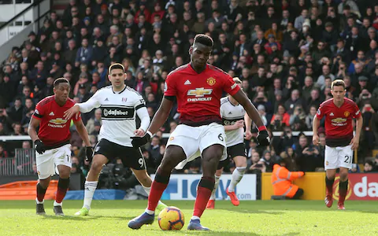

Sports
One of my passions and favorite interests is Gaelic football, although I am from Cork and play with Nemo Rangers I support Kerry and I have been going to Kerry games since Ive been 3 with my dad. Both of my parents are from West Kerry which is why I support Kerry. I also play soccer with Passage and do long distince running on the Rochestown walk way, in this time I have completed the Dingle marathon
Sport Interests
- 